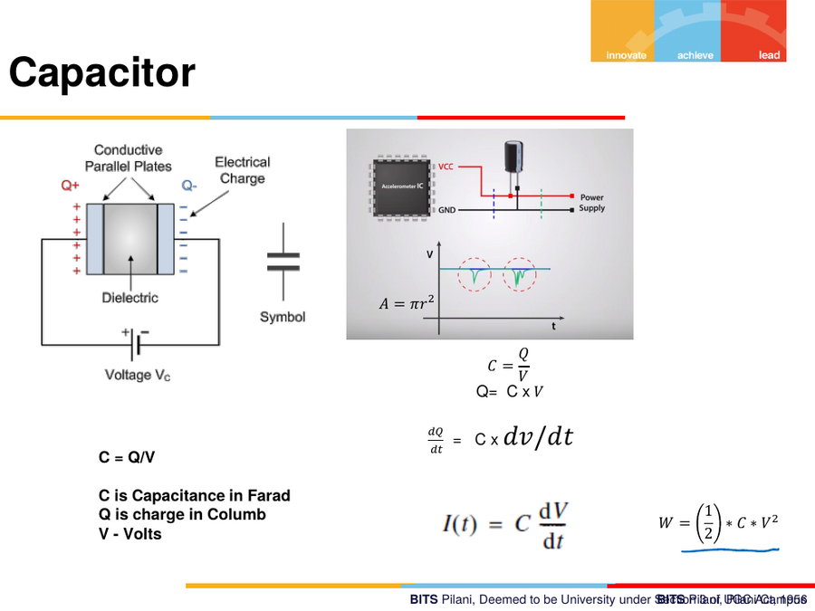
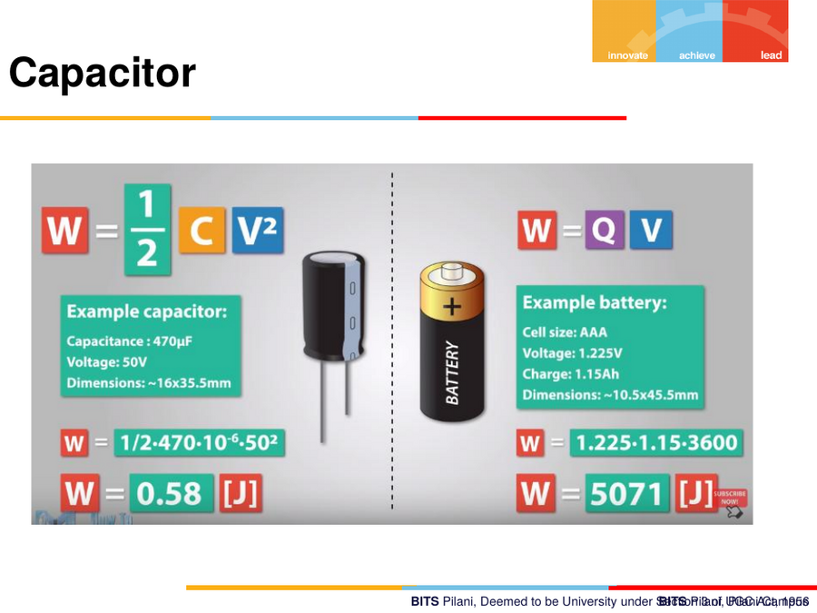
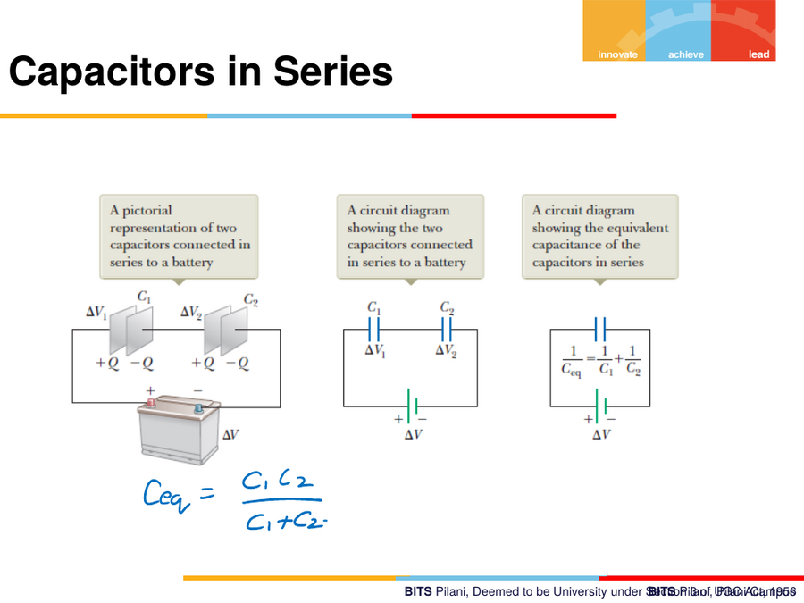
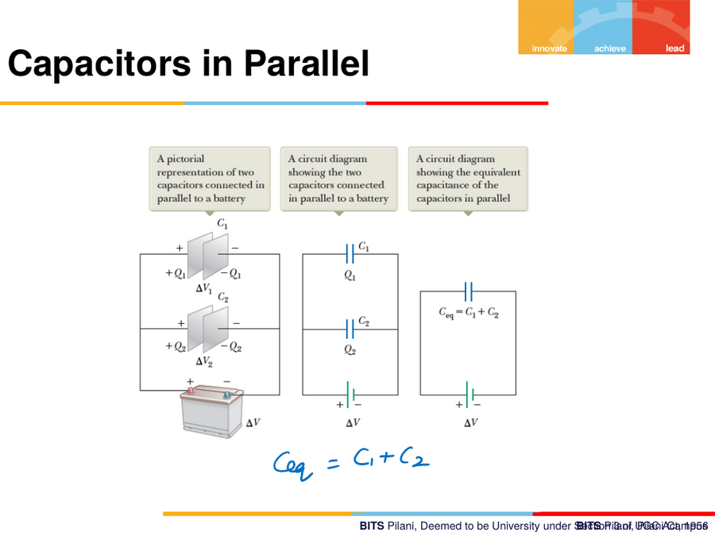
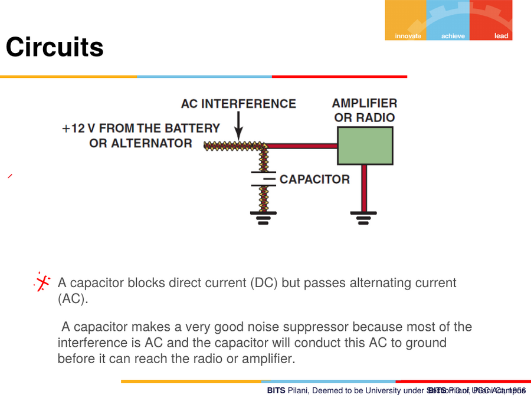

5. Capacitors
5.1 What a capacitor is
A parallel-plate capacitor stores electric charge/field between two conductive plates separated by a dielectric.
A = πr² (plate area, for circular plates)
C = Q / V ⇒ Q = C·V
C = ε·A / d
C= capacitance (Farad)Q= charge (Coulomb)V= voltage (Volts)ε(epsilon) = permittivity of the dielectric medium between the platesA= plate area,d= distance between plates
Current through a capacitor:
i(t) = C · dv/dt
Energy stored:
W = ½ · C · V² (also written W = Q·V, worked as an equivalent check)

Worked numeric example (electrolytic capacitor vs. a battery)
- Example capacitor: 470 µF, 50 V, size ~16×35.5 mm →
W = ½ × 470×10â»â¶ × 50² = 0.58 J - Example AAA battery: 1.225 V, 3600 C charge (1.15 Ah) →
W = Q×V = 1.225 × 1.15 × 3600 ≈ 5071 J
This comparison is a nice intuition-builder: a capacitor of reasonable physical size stores dramatically less energy than a small battery — a capacitor is fast to charge/discharge but low-energy-density; a battery is the opposite.

5.2 Ohm's law analogue for a capacitor
v_C(t) = (1/C) ∫ i dt i(t) = C · dv/dt
Two key behavioural facts (repeated for emphasis)
- A fully-charged capacitor acts as an open circuit (like the open switch in note 03 §3.4 — infinite resistance, current stops).
- Voltage across a capacitor cannot change instantaneously.
AC input behaviour
For v(t) = Vm sin(ωt) applied to a capacitor, current leads voltage
(current builds first, tracks the derivative of a rising sine).
5.3 Capacitors in Series
Mirror image of resistors — it is the reverse of the resistor rule:
1/C_eq = 1/Câ‚ + 1/Câ‚‚ ⇒ C_eq = Câ‚Câ‚‚ / (Câ‚ + Câ‚‚)

Note: the instructor explicitly stated that voltage-division / current-division formulas (as used for resistor networks) are not generally applied to capacitor networks in this course — that concept is limited to resistor networks.
5.4 Capacitors in Parallel
C_eq = Câ‚ + Câ‚‚

5.5 Capacitor as filter / noise suppressor (automotive application)
- A capacitor blocks DC but passes AC. More precisely: it doesn't literally "block" DC current in a mystical sense — under steady DC, the capacitor charges up and then behaves as an open circuit, so no steady-state current flows. Under AC, the capacitor keeps charging/discharging every half-cycle, so current appears to flow continuously.
- Noise suppression application: most electrical interference riding
on a DC supply (e.g.
+12V FROM THE BATTERY OR ALTERNATOR) is AC in nature. Placing a capacitor from the supply line to ground gives that AC noise a low-impedance path to ground before it reaches sensitive electronics (amplifier/radio), while the DC supply itself passes through unaffected.
+12V battery/alternator ──┬──────────────► to Amplifier / Radio
│
[C] (noise-bypass capacitor)
│
GND

5.6 Summary: Fully-charged behaviour
| Element | Fully charged behaves as | Cannot change instantaneously |
|---|---|---|
| Inductor | Short circuit | Current |
| Capacitor | Open circuit | Voltage |